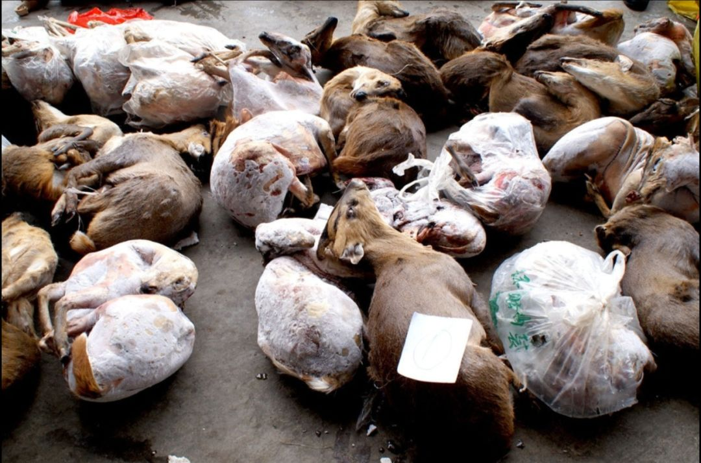
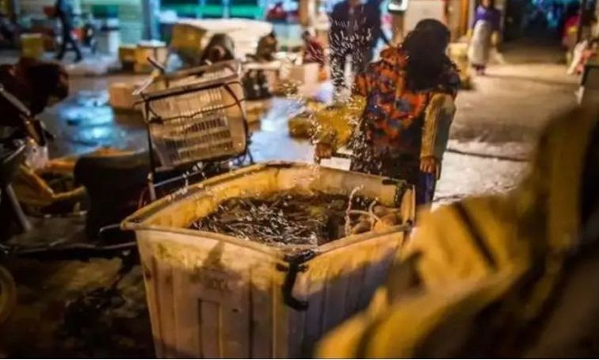

独家|重回武汉肺炎起点：卖野味的华南市场老板是谁？
原文链接 备份链接 本报记者 郝成 张家振 王迎春 武汉报道 目前确诊2000多人，引发全国高度关注，导致武汉封城的新型冠状病毒，被专家指来自于武汉市华南海鲜批发市场（以下简称“华南海鲜市场”）。该市场内的野生动物，则可能是最初病毒的携 …
SARS之后，我们以为人们对野味的消费会减少很多，没想到最近几年，这种需求又在不断增加，消费的种类也呈现不断扩大趋势。然而，从猎捕到运输、加工、售卖下的每个环节，也使得病毒在传播过程中不断发生变异。

记者 | 王珊 王海燕
野味集散地
▲▲▲
武汉肺炎爆发后，许多武汉人才开始仔细打量起华南海鲜市场。这座位于武汉市江汉区发展大道207号的市场，被新华路劈成东西两区，与汉口火车站和客运中心只有几分钟的步行距离，是一个二级批发市场，周边的居民有时也会到这里买菜。
如今，曾经的热闹都已经变成了静寂。国家卫健委高级别专家组在1月20日的发布会上指出，武汉肺炎爆发的源头是华南海鲜市场，病毒的源头很大可能是野生动物。据国家卫健委官网消息，2020年1月25日0-24时，29个省（区、市）报告新增确诊病例688例，新增重症病例87例，新增死亡病例15例，新增治愈出院病例11例，新增疑似病例1309例。

武汉华南海鲜市场
陈明是武汉人，曾经很喜欢吃野味，也开过馆子。2003年非典之后，他的生意就不再做了。他觉得这是自然界的一种报复，需要引起警惕。陈明说吃野味的潮流兴起于上世纪90年代，最早在海南兴起，一个个乡下的小破房子，消费动辄就是几千元。吃得最多的就是眼镜王蛇，身体很长，最长有三米，毒性非常大。店家会将其片成薄薄的一片，看起来跟日本刺身一样，烫好之后蘸不同的酱料，吃起来觉得很生猛。
北方野味的代表则是“飞龙汤”。“飞龙”指的是松鸡，这是一种体型比较大的珍贵飞禽，现在已经被国家列为二级保护野生动物。也有人喜欢吃野猪，野猪最讲究吃背上的一块皮，吃的人认为野猪喜欢在树上摩擦，长久以来会有松茸等各种菌菇的香味。
这两年，武汉普遍流行的野味是甲鱼和蛇。在一家餐厅老板的印象里，仅是去年甲鱼店就开了不少，整个市场竞争很大。“我们有一道以蛇为食材的菜，几乎桌桌都会点。”这位老板告诉我们，他们用的蛇都是蛇场养的，并不是野生，“但武汉吃蛇近两年确实很流行。”在陈明看来，对于吃野味的人来说，甲鱼和蛇并不够“野”——湖北森林资源丰富，野生动物品种丰富，全省共有脊椎动物851种，其中兽类118种，鸟类431种，爬行类52种，两栖类44种，鱼类206种，约占全国种类总数的19%。那么，被犯罪分子和食客觊觎的品种当然不止上面说的两种。
 网传华南海鲜市场野味价目图
网传华南海鲜市场野味价目图
2018年湖北省森林公安局公布的数字指出，湖北省全年累计侦办涉野生动物类刑事案件250起，查处行政案件494起，查获非法捕猎的野生动物16123只。为了应对盗猎，湖北组织的森林公安队伍已超过1500人。
有20多年工作经验的江西森林公安李苏告诉我，非法盗猎的野生动物一般有两个出口，一是自我消化，另外一个则是运往外地。陈明觉得湖北本地消耗的比例并不大，“以武汉为例，武汉人餐桌上人均消费标准最高也就500元，上世纪90年代吃一顿野味算下来人均也得上千元甚至更多，武汉消费不起。”他说某种程度上来说，作为中部地区的中心城市，武汉九省通衢，是长江航运中心，拥有38座码头，是华中地区最大的交通枢纽，“很多野味都是从武汉中转到了别的地方。其他地方的货物也会从这里中转到别的地方。”
李苏工作在江西，他说野生动物不一定卖得贵，“捕杀野生动物没有什么成本，用的只是一张网。”他告诉我，有时也卖得便宜。作为一名森林公安，李苏的主要职责是保护森林和野生动物资源，并进行林区的治安防范，这些年随着野生动物偷盗现象的严重，他60%以上的精力都被野生动物保护牵扯着。

他告诉本刊，在他们查处的案件里，有许多是从湖北过来的，也有从江西运往湖北的。“贩卖野生动物，利润很高，业人士认为其收益堪比贩毒，却成本最低。所以案件一直很猖狂。”李苏说，野生动物已经形成了非常完整的产业链，捕、贩、运、销，在每个环节价格都会翻上数倍。一则报道显示，比如穿山甲，在中越边境收购价格仅为几百元一只，可到了餐桌上，价格就高达近2000元一公斤，以一只穿山甲6-7公斤计算，仅一只穿山甲就能给产业链带来近万元的收益。
整个链条的终端，最终指向各地的批发市场。一位保护野生动物的志愿者告诉本刊，他曾到过广州清远一个农批市场考察，里面全部都是野生动物，“野生动物都是一车车拉到那个地方，收完了以后再分流，批发继续往外地走，不散卖，以鸟类为主，各种野鸭子。更野的东西必须要熟人才能购买。”另一名志愿者曾去过外地一个海鲜批发市场，里面甚至有一个野味区，67家的商铺专门卖野生动物的腊制品，也有少量的活体。他告诉我们，从他的判断来说，某种意义上，最先出现疫情的华南海鲜市场也像是这样一个终端市场，只是规模上可能小一些，“人们可以到这里买各种各样的产品，品类会比较多。”
漏洞下的风险
▲▲▲
这两年来，李苏觉得工作变得越来越忙。他将此归结为两个原因，一是随着外来务工人员的增多，农村人口减少，野生动物的生存环境相对改善，野生动物增多了，第二则是因为打击力度跟不上，捕猎野生动物的行为依然大量存在。这得到了一位采访对象的作证。她家位于西南地区，2006年退耕还林之后，野生动物慢慢变多，包括猪獾、黄鼠狼、麂子、野猪等，当地农民会在原先自己家的地界设陷阱捕获，捕回来卖钱。对于没有外出的人来说，这是一项不错的收入。“我家并没有捕捉野生动物对不对的概念，只是觉得这些东西能换钱而已，也没人管。”
这恰恰是李苏和同事执法困难所在。“你在农村打死老百姓一只羊，事主会天天来找你，让你帮他要赔偿，这是不得了的事。而如果是野生动物，这些在他们看来都是天生天养的东西，是没有成本的。长期下来，执法部门也就没有压力。”李苏举了一个例子，他说根据刑法规定，非法猎捕、杀害国家重点保护的珍贵、濒危野生动物的，或者非法收购、运输、出售国家重点保护的珍贵、濒危野生动物及其制品的，处五年以下有期徒刑或者拘役，并处罚金；情节严重的，处五年以上十年以下有期徒刑，并处罚金，“猫头鹰属于国家二级保护动物，猎捕5只以上就属于比较严重的行为，按照法律要判5年以上，但在量刑从轻的大背景下，多半案件都不会这么做。”

李苏发现，近几年来，野生动物的贩卖规模有不断增加的趋势。他们曾经查获一辆运输从安徽出发，途径江西的运输车，车门打开的一瞬间，执法人员都震惊了，满满一车全是动物，最后统计有4000多只，包括黄麂、猪獾、狗獾、白面狸、鹭鸟等，同时另有眼镜蛇、五步蛇、乌梢蛇等爬行类600余公斤。“大批被截获野生动物已死亡。规模大是这两年的新特点，以前可能就是跟着大巴车或者是放在后备箱里。冬天是猎捕野生动物的旺季，这个时候容易储藏。”
中国观鸟组织联合行动平台的工作人员朱雀会将国内的野生动物市场概括为“大江大河”和“小溪小流”，他告诉本刊，大江大河是指有成熟的贸易链条，从动物怎么抓、怎么处理、谁来卖、谁来运，都一应俱全，也有固定的运输道路。我们杂志曾经做过猎杀禾花雀的报道。禾花雀多从天津唐山一代捕捉，一般都很瘦，因此需要催肥，用苏子、芝麻、小米、葡萄糖、维C，还有一种叫“速达肥”的家禽添加剂饲料，养20天左右后闷死。采取闷死的办法一是省事，二是方便运输，三是为了带血，因为食客认为这样可以壮阳。这些禾花雀以100只为一个食品兜的单位装泡沫箱，用胶带封好，密闭保鲜，可通过机场销往广东。

“小河小溪”则是指普通人能够接触到的途径，即野味从村镇集市上收购以后，直接到临近的城市，共给一些苍蝇馆子。“这个链条短平快，可能只有一个人开个面包车到市场，这样就很难执法。”
运送的过程也加大了野生动物食用的风险。李苏经常会查获到长途大巴运送野生动物，大巴上层是人，下层则是行李，动物们跟着汽车走十多个小时。这是他们现在相对重视的案例，“人和动物长时间在一起，极易产生交叉感染。这一块不及时制止，可能会产生很严重的后果。”李苏说如果涉及到大批量的野生动物，在长途运输之前，商贩会给它们服药，以延长他们的活力，“这中间存在滥用药的问题，而且野生动物不经过检疫，这些都增加了食用的风险。”
病毒突变
▲▲▲
根据《动物防疫法》及《动物检疫管理办法》规定，野生动物必须是合法捕获的，且需在捕获后3天内向当地动物卫生监督机构申报检疫，经检疫符合以下条件的，自非封锁区、临床检查健康、农业部规定需要进行实验室疫病检测的，检测结果符合要求，由官方兽医出具《动物检疫合格证明》后，方可饲养、经营和运输。非法猎捕的前提之下，这一系列举措显然都无法运行下去。
李苏告诉本刊，按照《国家重点保护野生动物驯养繁殖许可证管理办法》规定，凡驯养繁殖国家一级保护野生动物的，由省、自治区、直辖市政府林业行政主管部门报林业部审批；凡驯养繁殖国家二级保护野生动物的，由省、自治区、直辖市政府林业行政主管部门审批。“申请许可证的单位或者个人必须要有适宜的驯养繁殖野生动物的固定场所和必需的设施，但在我们办理的案件里，许多地方条件是不具备的，但是他们手上却有许可证明，所以目前系统是有漏洞的。我们就得费更大的力气去证明它的来源是非法的。”

安徽医科大学基础医学院微生物学教研室教师瞿明胜的专业就是研究病毒。他告诉本刊野生动物运送途中很有可能产生交叉感染的问题。“这种感染会使得病毒发生突变，导致病毒能力增强，从而传播到人的身上。”瞿明胜说，**病毒包括冠状病毒发生突变的一个重要原因，即是其自然条件或者环境条件发生变化，病毒在生存中面临选择压力，必须要靠不断地调整和改变自己来适应环境。
**
“比如说之前sars病毒的宿主是果子狸，但现在果子狸越来越少，病毒可能就会去寻找新的宿主，然后最终感染到人。”瞿明胜告诉本刊，跟流感病毒和HIV病毒相比，冠状病毒其实是很稳定的，一般不容易发生突变，目前却已经出现了三次变异：sars、中东呼吸综合症以及目前的新型冠状病毒。

在病毒不断突变传播的过程中，病毒也会表现出对药物的耐药性。瞿明胜说金刚烷胺对流感病毒有很好的治疗作用，但2013年H7N9禽流感病毒出现时，它却表现出了对金刚烷胺的抗药性，“后来发现病毒只是发生了一个氨基酸的突变。面对环境的压力，它不得不作出变化。”瞿明胜提到了此次疫情的最初爆发点华南海鲜市场，“各种各样的野生动物混在一起，病毒之间有可能出现遗传物质的交换，会为突变提供更便利的条件。市场内人流量特别大，病毒也会自己创造条件去感染人，并在人群中扩散。”瞿明胜说，2013年H7N9疫情出现后，即刻关闭了活禽市场，疫情很快得到了控制。
（李苏为化名）
作者档案

**王珊
**
喜欢阳光，喜欢晒太阳，最近喜欢易建联。
26分钟前

三联生活周刊
个人微博：@小笨走走停
**王海燕
**
三联记者，比较喜欢采访，偶尔也喜欢写稿
26分钟前


三联生活周刊
个人微信公众号：解放路97号（jm-freetree）
#我在疫情一线#
话题征稿持续进行中
《三联生活周刊》全媒体现面向所有读者征稿。包括但不限于：奋斗在疫情一线的医护人员、媒体同行们的故事，专业人士对接下来防疫工作的建议……
此次征稿形式不限：文字（1500～2500字为佳）、图片（原创拍摄）、音频视频（原创录制）都欢迎。大家携手，共度难关！注：请务必保证故事真实、客观，不造谣、不传谣。
《三联生活周刊》微信公号投稿邮箱：zhuangao@lifeweek.com.cn来稿格式：#我在疫情一线#➕标题《三联生活周刊》官方微博参与话题：#我在疫情一线#《三联生活周刊》中读APP投稿邮箱（音频投稿为主，5分钟以内为佳）zhongdu@lifeweek.com.cn
期待你的来稿！
⊙文章版权归《三联生活周刊》所有，欢迎转发到朋友圈，转载开白请联系后台。未经同意，严禁转载至网站、APP等。
小笨王珊
微信扫一扫赞赏作者 赞赏
长按二维码向我转账
受苹果公司新规定影响，微信 iOS 版的赞赏功能被关闭，可通过二维码转账支持公众号。
文章已于修改
原文链接 备份链接 本报记者 郝成 张家振 王迎春 武汉报道 目前确诊2000多人，引发全国高度关注，导致武汉封城的新型冠状病毒，被专家指来自于武汉市华南海鲜批发市场（以下简称“华南海鲜市场”）。该市场内的野生动物，则可能是最初病毒的携 …
原文链接 备份链接 文|王一然 编辑|胡大旗 “这道菜叫什么？” “不能说。” 这家餐厅看上去没有任何特别，普通大排档，招牌上都是家常菜和烧烤类食物，夏日，外面摆满塑料椅子，一楼是大厅，二楼有五六个包间。林建安30岁出头，四五年前负责公司 …
原文链接 备份链接 【财新网】（记者 黄蕙昭）从全国看，疫情还处于早期散发阶段。国家卫健委主任马晓伟在1月26日下午国务院新闻办举行的发布会上表示。截至1月26日20时，中国确诊新型冠状病毒肺炎病例2058例，其中湖北1052例，而非湖 …
原文链接 备份链接 二月初一。 今天仍然是大晴天。想起小时候，家里有一本书，名字就叫《大晴天》。内容说什么，早已经忘光了。前阵以为梅花已都谢尽，不料，昨天突然发现，院子里的红梅正怒放着。而且没有哪一年像今年这样，开得如此明丽鲜艳，一种隆重 …
原文链接 备份链接 随着疫情消息的增多，各种关于其来源、如何传播与防控的“传言”也接踵而来。为此，我们采访了相关领域的专业人士，试图解答十个公众最为关心的问题。 记者 | 许冰清 肖文杰 倪妮 张云亭 项维肖 毛怡玫 实习记者 | 文思 …